EMToast: The Absurd Universe Escalates (2012–2013) | Podcast Deep Dive


EMToast: The Absurd Universe Escalates (2012–2013) | Podcast Deep Dive revisits another chaotic chapter in EMToast history, exploring the fake news stories, surreal humor, bizarre recurring characters, offbeat visuals, and internet absurdity that defined the site during 2012 and 2013.
In this episode, we look back at a wild stretch of EMToast posts, from We Bought the Dead Dog Capital Zoo and Stephen Hawking’s 911 Call to You Probably Think This War Is About You, the “No Doy” cat billboard, Secret Family Recipes My Grandma’s Skeleton Sold To Me, Folgers Crystals Are Life Crystals, and more strange, darkly funny pieces from one of the site’s most unhinged eras.
Read the original posts discussed in this episode:
EMToast Timeline:
https://emtoa.st/yearly-timeline/
2012 Archive:
https://emtoa.st/yearly-timeline/#year-2012
2013 Archive:
https://emtoa.st/yearly-timeline/#year-2013
Visit EMToast:
https://emtoa.st/
Graphics from this episode are below:
{kind=link}
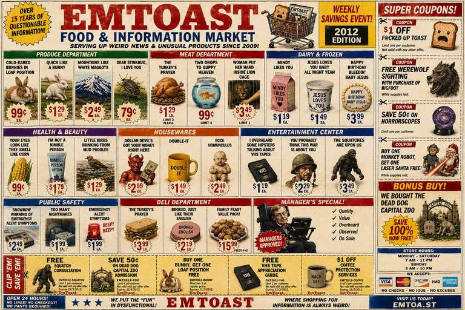
{kind=link}
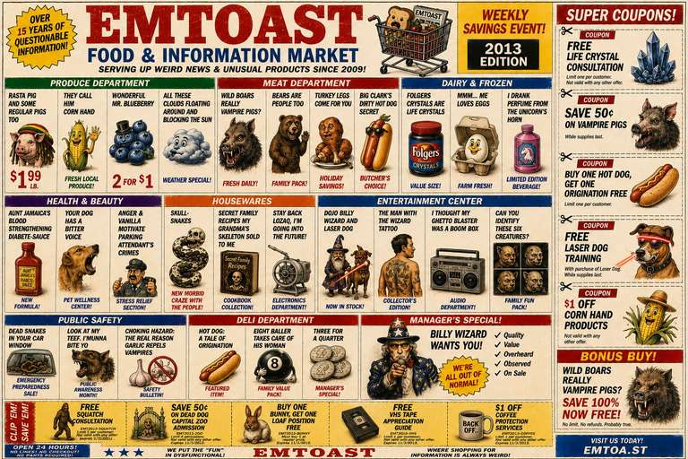
{kind=link}
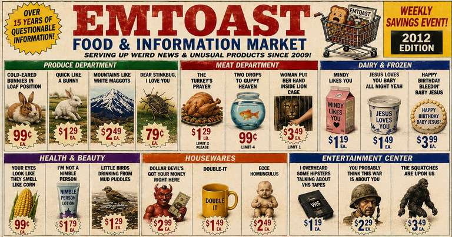
{kind=link}
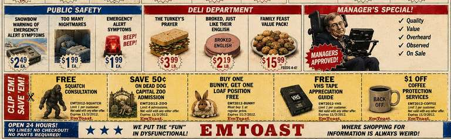
{kind=link}
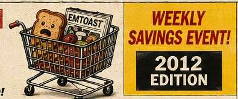
{kind=link}
{kind=link}
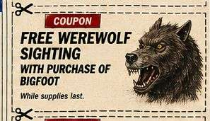
{kind=link}
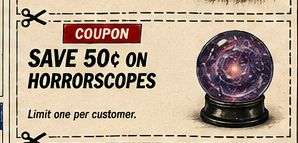
{kind=link}
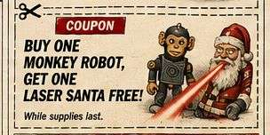
{kind=link}
{kind=link}
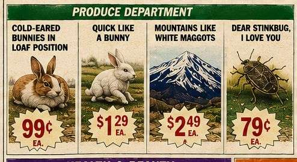
{kind=link}
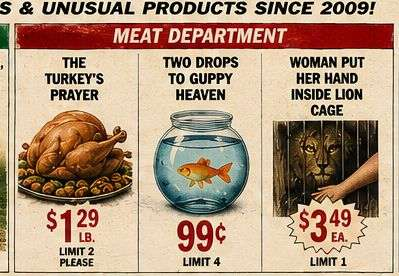
{kind=link}
{kind=link}
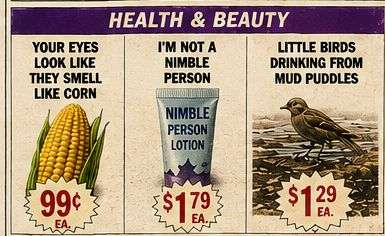
{kind=link}
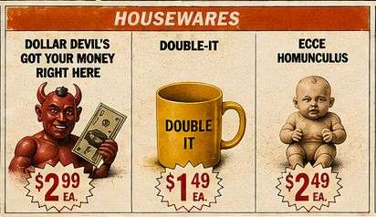
{kind=link}
{kind=link}
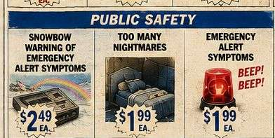
{kind=link}
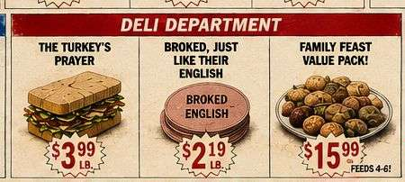
{kind=link}
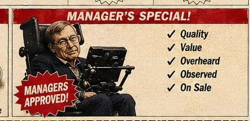
{kind=link}
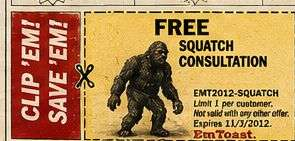
{kind=link}
{kind=link}
{kind=link}
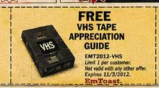
{kind=link}
{kind=link}
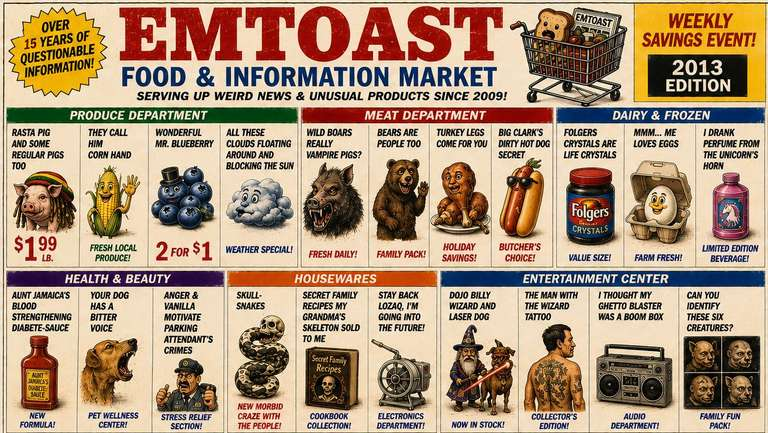
{kind=link}
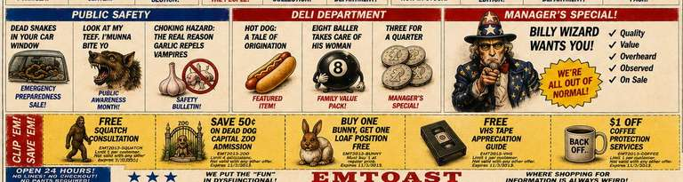
{kind=link}
{kind=link}
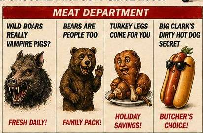
{kind=link}
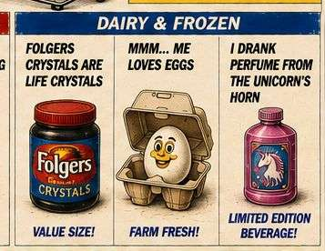
{kind=link}
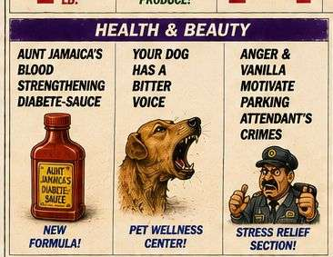
{kind=link}
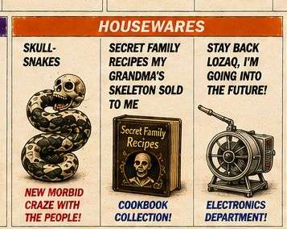
{kind=link}
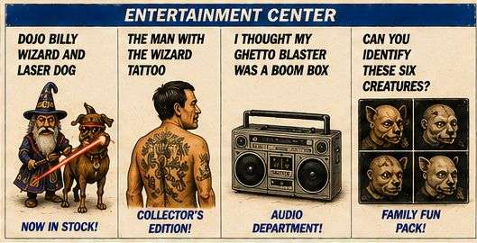
{kind=link}
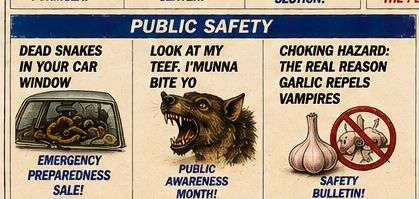
{kind=link}
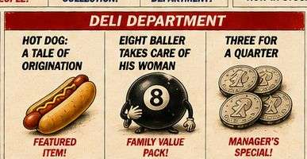
{kind=link}
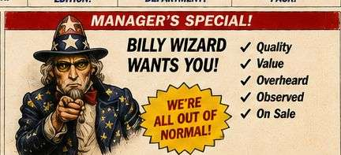
{kind=link}
{kind=link}
{kind=link}
{kind=link}
{kind=link}
{kind=link}
EMToast: The Absurd Universe Escalates (2012–2013) — Transcript
00:00
HOST 1: All right, so get this: today we’re diving into EMToast.com, a blog that’s basically a gold mine of pure early-2010s internet humor from around 2012 to 2013.
HOST 2: Oh wow.
HOST 1: We’re talking weird short stories, fake news in a funny way, and bizarre artwork all over the place. Seriously, the most random stuff imaginable.
HOST 2: Sounds right up my alley.
00:15
HOST 1: Yeah, that early-2010s internet humor was something else, right? Anything went back then. Total Wild West of memes and everything else.
HOST 2: It really was. Like a digital cabinet of curiosities.
HOST 1: Exactly. Like one of those old-timey cabinets, but online, full of things you’d click on at 2:00 in the morning just because.
HOST 2: And then suddenly you’re in a rabbit hole wondering what you’re even looking at.
00:45
HOST 1: So, are you ready to get weird? Because I think you’re really going to dig this first one: We Bought the Dead Dog Capital Zoo.
HOST 2: Okay, just the title alone…
HOST 1: I know, right? So picture this: a family that’s totally normal, except they’re obsessed with animal crackers — the little circus-box kind.
HOST 2: Okay, I can kind of picture that.
01:00
HOST 1: But really obsessed. They throw parties dedicated to animal crackers. They trade rare ones like Pokémon cards.
HOST 2: I didn’t even know there were rare animal crackers.
HOST 1: So the mom decides it’s basically her destiny to buy a zoo and live out this animal-cracker dream.
HOST 2: Wow.
01:15
HOST 1: She drags her husband into buying the zoo, except plot twist: it’s not a zoo.
HOST 2: Oh no. What is it?
HOST 1: It’s a puppy mill.
HOST 2: A puppy mill?
HOST 1: And not just any puppy mill. The author describes it as “the dead dog capital of North America.”
01:30
HOST 2: Wow.
HOST 1: You can practically smell it through the screen. There are piles of dogs barely bigger than rats, this awful stench, total sensory overload.
HOST 2: That is rough.
HOST 1: And then, because it somehow gets even worse, they start finding bizarre stuff lying around — like a dead fish on the roof and a pirate ashtray full of sand.
01:45
HOST 2: Okay, that’s a new one.
HOST 1: It’s like, what happened in this place?
HOST 2: You would not believe the things people find.
HOST 1: And it gets weirder, because then we meet Willie.
HOST 2: Willie?
02:15
HOST 1: Willie the humanzee chimpanzee, apparently, who does chores around the house — laundry, dishes, the whole thing. They even say he once had a job bagging groceries.
HOST 2: Okay, now you’re just messing with me.
HOST 1: I’m serious. This is EMToast, remember?
HOST 2: I’m starting to realize that means anything goes.
02:30
HOST 2: Part of me is still stuck on the humanzee thing. Like, did they actually have a chimp doing chores, or was that just part of the joke?
HOST 1: It’s EMToast. They love to blur those lines.
HOST 1: Speaking of blurring lines, let’s talk about Stephen Hawking’s 911 Call.
HOST 2: Wait, really? Stephen Hawking?
02:45
HOST 1: The one and only.
HOST 2: I’m already intrigued.
HOST 1: So obviously it’s fake — a made-up transcript — but the premise is what gets me. They’ve got Hawking, in the robotic voice, calling 911 because he’s fallen into a squatch nest.
HOST 2: A squatch? As in Bigfoot?
03:00
HOST 1: Apparently he was chasing a rare butterfly and stumbled right into it.
HOST 2: First of all, how do you even stumble into a Bigfoot nest?
HOST 1: That’s exactly what the 911 operator wants to know. And of course, they keep telling him to stop pretending to be a robot because this isn’t funny.
HOST 2: The irony is perfect.
03:30
HOST 1: Right? It’s like Stephen Hawking, Bigfoot, and a 911 call walked into a bar — except the bar is this bizarre blog post.
HOST 2: And the best part is that it’s actually funny.
HOST 1: Not just funny — clever funny. The repetition in the operator’s responses builds this rhythm that pulls you deeper into the absurdity.
HOST 2: It’s satire, but it also has that prank-call energy.
03:45
HOST 1: Exactly. You’re trying not to laugh at the situation, but it’s just too much.
HOST 1: Okay, ready for a complete shift? Buckle up for Carly Simon Wars.
HOST 2: Oh, I am so there.
HOST 1: So Carly Simon has basically declared war on everyone who’s ever wronged her.
04:15
HOST 2: What’s her weapon of choice? Scathing lyrics? Surprise album drops?
HOST 1: Think bigger. Way bigger. Remember Willie the humanzee from the zoo story?
HOST 2: Please tell me she weaponized the humanzee.
HOST 1: Not quite, but close. She has clones — clones of herself — sent out to sabotage her enemies.
04:30
HOST 2: That’s amazing.
HOST 1: And it gets better. There are weather-control devices, armies of squirrels — it’s completely nuts.
HOST 2: I love it.
HOST 1: And of course it wouldn’t be an EMToast story without random cameos.
04:45
HOST 2: I’m sure they found a way to work in some unexpected guests.
HOST 1: At one point, Dr. Drew and Gary Busey show up leading a celebrity militia.
HOST 2: You cannot make this stuff up.
HOST 1: Well… EMToast can.
05:00
HOST 1: Okay, next one is a doozy, even for them. You ready for this? Feral Cat Rape Cave.
HOST 2: Wow. Okay, that one might need some context.
HOST 1: Yeah, definitely. The title is a lot, and it’s clearly meant to be provocative.
05:15
HOST 2: Still, sensitive topic.
HOST 1: Absolutely. And the actual post isn’t really about that. It’s more about how quickly fear and misinformation can spread online when you throw in truly outrageous details.
HOST 2: All right, I’m listening.
05:30
HOST 1: So it starts with a story about a tourist witnessing a woman get abducted by what they describe as “a pulsating mound of feral cats.”
HOST 2: A pulsating mound?
HOST 1: It’s like they took all those B-movie horror tropes, but instead of sharks or aliens, it’s feral cats.
HOST 2: That tracks.
05:45
HOST 1: And then they just run with it, turning it into a parody of sensationalized news and fearmongering.
HOST 2: This is why I love EMToast. They take something so ridiculous and somehow make you think about it — even if it’s just because you’re trying to figure out what you just read.
06:00
HOST 1: Exactly. You go from a pulsating mound of feral cats to actual commentary on how this stuff spreads online. It’s like they’re playing with urban legends, but giving them this weird internet twist.
HOST 2: And they always sneak in little details that make you laugh out loud.
HOST 1: Like in this post, there’s a whole section on how to avoid feral cat attacks.
06:15
HOST 2: Okay, I have to hear this. What’s the expert advice? Carry catnip? Speak only in meows?
HOST 1: Close. They say you should carry lemon rinds and spray yourself with water bottles.
HOST 2: Of course they do.
HOST 1: Right? Ridiculous, but somehow believable in that very specific EMToast way.
06:45
HOST 1: Speaking of ridiculous and believable, are you ready for a few more EMToast gems? Because we’re just scratching the surface.
HOST 2: Lay it on me.
HOST 1: Okay, so this one’s short but sweet. It’s a picture of a billboard, and the billboard just says “No Doy.”
HOST 2: That’s it?
07:00
HOST 1: That’s it. Oh, and there’s a cat on the billboard — a very unimpressed-looking cat.
HOST 2: I’m starting to think EMToast has a thing for cats.
HOST 1: A very specific “No Doy” kind of cat.
HOST 2: Definitely.
07:15
HOST 1: Okay, this next one is a personal favorite: Secret Family Recipe Is My Grandma’s Skeleton Sold To Me.
HOST 2: Hold on. Did you say grandma’s skeleton?
HOST 1: You heard that right.
HOST 2: And they just leave it at that? No explanation?
07:30
HOST 1: Nope. And that’s the beauty of it. They give you just enough to spark the imagination and then let you run wild.
HOST 2: It’s like one of those “what’s the story behind this?” props, but on another level.
HOST 1: Exactly.
HOST 1: Okay, last one, I promise: Folgers Crystals Enthusiasts.
07:45
HOST 2: What? Enthusiasts? Like the coffee?
HOST 1: The coffee.
HOST 2: I’m not even going to ask what kind of enthusiasm we’re talking about.
HOST 1: Let’s just say this person believes Folgers Crystals can cure anything.
08:00
HOST 1: Cold? Folgers. Headache? Folgers. Existential dread? You guessed it — Folgers.
HOST 2: So they took the most mundane thing possible and gave it a cult following.
HOST 1: Exactly. That’s EMToast for you. Always taking the ordinary and making it extraordinary.
08:15
HOST 2: “Extraordinary” might not be the word, but it’s definitely memorable.
HOST 1: And as much as we’ve laughed at all this weirdness, it does make you wonder.
HOST 2: About what?
HOST 1: Why this kind of humor works.
08:30
HOST 2: Maybe it’s nostalgia. Like a time capsule of that internet era.
HOST 1: Maybe. Or maybe it’s something more than that — a reminder that it’s okay to find joy in the absurd and embrace the weirdness.
HOST 2: Because sometimes the things that make the least sense are the ones that make us feel the most alive.
08:45
HOST 1: And on that note, I think we’ve reached the end of our EMToast deep dive.
HOST 2: But if you ever find yourself needing a little dose of digital absurdity, you know where to find it.
HOST 1: Just don’t blame us if you end up questioning everything you thought you knew about the internet.
09:00
HOST 2: Until next time.
HOST 1: Keep exploring.
Related posts

Podcast: Why EMToast Has Survived Since 2008
Well friends, we've been feeding the content of EMToast directly into AI to see what kind of scrambling can be…

EMToast: Top 10 Zombie Sightings
To prepare for the upcoming Halloween celebrations, EMToast has done extensive market research and delved deep into EMToast personal memory…

EMToast: The Early Days (2008-2009) | Podcast Deep Dive
EMToast: The Early Days (2008-2009) takes a look back at the first years of EMToast, exploring the humor, strange news,…

EMToast: Top 5 Werewolf Sightings
EMToast has done extensive market research and delved deep into EMToast personal memory banks to bring you the top 5…